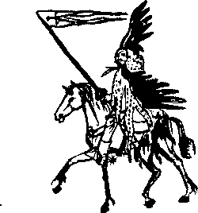

Dersaadet’in, içinde pişen dedikodu aşları bitmek tükenmek bilmeyen, o zamanlar kaldırıp indirmekle ocağı söndüreceği de henüz kestirilemeyen kazanları yine kaynayıp durmaktaydı. Sultan III. Burak’ın oğlu II. Berke ne menem bir sultandır diye merak eden bütün hizipler hem sultanı hem de kendi güçlerinin sınırlarını deniyor, Nemçe’ye karşı izlenen siyasetin “vehâmetinden” dem vurarak serhadlerin yeniden şöyle bir harlanmasını, canlandırılmasını istiyorlardı.
Babası hakkında yapılan “sefere çıkmaz, her akşam bir bakire cariye ile muamelatı vardır" dedikodularım ve daha başkalarını duydukça her oğul gibi üzülen II. Berke, daha tahta çıkmadan her tarafa tahta çıkınca bizzat sefere çıkacağı haberlerini gönderiyordu.
İşte o vakit gelmiş, Berke tahta geçmiş, ama tıpkı sünepe babası gibi İstanbul’dan ayrılmıyordu. Kubbealtı vezirleri, ulema, yeniçeriler, altıbölük halkı, harem kadınları, esnaf loncaları, Hint tüccarı, kapan tüccarı, tarikatlar, Rum ve Ermeni patriği efendiler, Venedik balyosu, İngiliz, Fransız ve İspanyol elçileri, taşradan birkaç zaman için gelmiş iş sahipleri velhasıl herkes bu serbest kürsüye katılıyor, konuşuyor, konuşuyordu. II. Berke’nin bir yiğitlik yapıp verdiği “Alaman eline evvel baharda sefer-i hümâyûnum vardır tiz tedariki görüle" emri, bu dedikoduları keseceğine daha da hızlandırmıştı. Bir tahmin, sultanın böyle söyleyerek hazırlıkların ciddiye alınmasını sağlamasıydı. Sonra Edirne’ye kadar şöyle kısa bir “göç-ü hümâyûn"dan sonra, su koyarak oradan orduyu sadrazam “hilesine koşup" kendisi orada “saadet ve devletle kafaları çekmeye” itibar edecekti.
“Ol gün nihayet geldi çattı. Enva-i memâlikden Lap, Çam, Mat, Kega, Toska tüm vilayet-i Arnabutluk’tan, Mora, Sırbistan, biraz Bulgar çokça Boşnak, tüm Rumeli’nden, Anadolu, Karaman ve Rum vilayetlerinin raiyyet olan keferesinden tek tek beyaz Osmanlı çileği devşirir gibi devşirilmiş keçe külâhlı, beli palalı yeniçeriler, yemin ve yesar altıbölük sipahileri, acayip şapkalı cebeciler, vuracak kelle bulamadıktan günü mahzun geçiren bostancılar, mızraklarına küçük kerkenez kanatları takmış topraklı sipahiler, anların anlara mümâsil cebelüleri, geçmiş cenklerin kaygusu ile muazzeb azebler, büyük büyük paşaların mükemmel kapuları, sırtlarına yolbars postu geçirmiş, kafalarına kartal kanatları takmış deliler, sütbeyaz kefenler içinde, atlarının kuyruğunu kesmiş, kendi yasını kendileri tutan serdengeçtiler, akacak kan gibi damarda durmayan akıncılar, Bitlis ve Cizre gibi ocaklık tımarlardan gelme bıyıklı Kürt aşiret süvarileri, Şammar ve Aneze Arablarını temsilen birer hecinsüvar Arab birliği, Rumeli’nin Evlad-ı Fatihan ve Türk uşakları, Bulgar tovacı ve voynukları, biri fustanella giymiş Sul Arnavutlarından müteşekkil olduğu için tennureli Mevlevi çelebileri ile karışan, diğer ikisi Ulah ve Rum olmak üzere Eflak ve Buğdan’dan voyvodalarınca gönderilmiş üç Hıristiyan birlik, müteharrik koca bir halktan başka bir şey olmayan Kırın Tatarları, tam on iki kabileden Adıge savaşçıları, ok çeker Nogay atlıları, lig gibi Çeçen yiğitleri, Dağıstan şemhalmın seçme Lezgi birliği, Asya-ı Vustâ’dan badem gözlü Özbek gönüllüleri, Çin hudutlarından gelme beyaz keçe külâhlı tam beş adet Kırgız seyyahı, Habeş beylerbeyi tarafından gönderilen seçme Afar süvarileri, Fur hâkiminden ihda olunan Nubya pehlivanları, Mısır paşasının gönderdiği matrakçılar ve ziyadece süslü püslü, ince demir telden örmeç zırhlı Memluk cündîleri, Tunus valisinin oğlunun kumandasında kara yağız kuloğulları, Trablusgarp’tan su yerine kan içmeye müheyyâ Tuareg fârisleri, ince donanmaları ile Tuna deryası üzerinde ilerleyen, bir emirle her an taşra dökülmeye can atan ve ekseri ebaanced Zeybek olan Cezayir korsanları, İt Barak Baba taht-ı maneviyyesinde tahta kılıçlı Kalenderi ve Melami dervişleri, yalnızca tennureleri ile döne döne çarpışan Mevleviler, acemi ve henüz dahi “Türk üzerinde” olan oğlanlar, tamamıyla müsellâh orducu esnafı, nalbantlar, serraclar, kavaflar, tekerlekçiler, araba okçuları, tuzlu beyaz ve sarı nohut kavurur iki Çorumlu bölük, saz ve kopuz götürenler, her daim inşaat ile meşgul düş münşileri, tevârih-i âl-i Osman müellifleri, menâkıbçılar, kasideciler, muvaşşah ve zecel söyleyenler, at oğlanları, seyisler, baytaran bölüğü, çadır mehterleri, kahve dibekçileri, berberler, diş çekenler, sünnetçiler, meddahlar, çengiler, köçekler, civelekler, çıtırıklar, padişah-ı âlem ve hilafetpenah hazretlerinin hükmünün geçtiği halayık... Hepsinin tadâdı hiç mümkün mü? Ne mümkün zulm ile bidad ile tadâd bolay ki hakan ül-hevakin hazretleri emretsin! Her biri bir konakta, bir menzilde gelip kavuşarak, ufak derelerin akıp birleşmesi ile oluşan ve kabardıkça kabaran bir âdem nehri, bir yoğuşkan insan ırmağı oldular. Daha önce hiç böyle bir Osmanlı ordusu gören var mı hey erenler? Heey... heeey! Tuna bu yana akar, biz tam tersine, hey babam hey, mevc vura vura, dalgalana dalgalana, köpüre köpüre... Sıkı dur Kızıl Elma biz gelmekteyiz, seni daha dalında iken hayalimizin bir köşesinde koparmakta, soymakta, tahayyülen ve teberrüken iştahla dişlemekteyiz, gök gözlü küffar kızları aşkına bir hu çekelim erenler, huuu Allaaah..."
Bir havuza atılan taşın yaptığı dalgalanmalar gibi orduy-u hümâyûnun mütevazı bir kıyıcığından başlayan bu hu sesi, asakir- i mülenevvia sunufu arasında yankılana yankılana, dereleri, tepeleri, koyakları aşarak taa yeniçerilerin olduğu yere kadar geldi ve orada sert bir duvara çarpıp sonsuzluk kadar uzun bir lahza durduktan sonra yekpare bir soluk olarak 44.567 ciğerden birden dışarı uğradı: Allah huuu...
Peşinden cihândârilerinin vücud-u akdeslerinin yakınında giden yüzlerce mehterden orta Balkan’ın her tepesinden yankılanarak geri gelen bir vaveyla asumana yükselmeye başladı.
“Kimin ulan bu cır cır kafa üten ses,” diye düşündü, “kendi yetmiyormuş gibi koca orduyu ateşe verdi kitapsız... Ne var? Tamam, toplandık gidiyoruz işte, illallah bu kopuz çalan, saz tıngırdatan âşıklardan ozanlardan, çalar-oynar, çalmadan-oynar, çengi-çalgıcı taifesinden yeter be Yahu! Küffarın gömgök demire bürünmüş atlıları, kavalyeleri, banları, hersekleri, jupanları, boyarları beş fersah öteden görünse, püzevenkler defi dümbeleği fırlatıp atar, ar namus perdesini aralar, yestehledikleri deliğe kadar kaçar, bir de orduya ihtilal verir keratalar... Ah Hwace, ah Utarid Zülfü, ah Şeker Hami, ah Yusuf Ziya Paşa hepsi sizin o kalın brakisefal kafalarınızın, o ne lan, ben ne dedim? Bırakis... ne... neyse... o kafalarınızın altından çıktı. Ya sana ne oldu ey Yusuf Ziya Paşa? Be adam! Alaman neresi, Venedik neresi, ey coğrafya bilmez kâfir, nasıl Bosna’dan çıkıp da Alaman niyetine elin Venediğine saldırırsın? Bir şey değil, balyosu Yedikule’ye tıktılar, en iyi haber kaynağından olduk... Hepsi sizin köftehorluğunuz! Dürten vardı değil mi? Rahat battı İstanbul’da! Ya Hwace’min o ‘muhannes ibn-i muhannes’ oğlu? Yok yok... Sözüm sana değil Hwacem... Muhannes derken... biz hepimiz senin erkek adam olduğunu biliriz... kah... kah... kah... Yoksa o kadar cariyeyi nidesin? O kadar merd-i musâhib müdavim arasında bir muhannese denk gelmiş, sen o kapı senin bu kapı benim bir izzet ve ikbal yakalama hayali peşinde sürterken, geceler uzun, vakit geçmez Allah geçmez... Kah... kah... kah... Tüm Tuna yalılarını kana ateşe verdiniz, sonra yok küffarın biti kanlandı, yok gitmesek Nemçe imparatoruna ayıp olur, yok yaraktı, var kürekti, mıy mıy mıy... Alın işte gidiyoruz... Hem de kuruda giden gemi üzerinde...”
Böyle düşünmekte haklıydı. Osmanlıların atalarının taa Afganistanlardan süre süre getirdiği tüylü saçaklı, salyalı sümüklü Baktirya develeri ile Arab hecinlerinin bir çaprazı olan kokulu bir tülünün üzerindeki kumaş denklerine sucuk gibi bağlanmış gidiyordu. Hatırlamaya çalıştı, herhalde yâran serhoş kafayla düşmesin diye bir iyi bağlamışlardı kendisini, daha önce de nerede, bir Iran seferinde mi olmuştu, ne?
“Bin defa söylersin anlamazlar, ulan geçen sefer de böyle ettiler, âlempenahın yoluna döşenecek kemhaların, dibaların üstüne affedersiniz kustum, çıkardım. Sağlam adamı koysan bu meretin üstüne aynısını yapar... Gitti gelmez altı ay gemisi... kuruda gidiyor... dur... dur... yavaş... yavaş... Allah müstahakını versin... Ulan deyyuslar, kodoşlar, kavatlar! Çözün ulan beni bu alâmetten... Yine kendisinden de pis kokulu, sidikli, köpüklü bir maya gördü değil mi?”
Bu da doğruydu. Bu heyula kalabalığın nasıl derleme, nasıl melez bir şey olduğu da. Gerek insanlarında gerek hayvanlarında hâlâ Asya-ı Vustâ’nın kanı, bu tülü gibi devasa “enam”da, Avrupalılara göre “midilli”den başka bir şey olmayan küçük cidagolu bozkır atlarında, orduyu başka bir ordu imişcesine takip eden, beylik çobanların sürüp getirdiği on binlerce koca kuyruklu dağlıç ve karaman koyunlarında ve insanlarında. Bilinç yavaş yavaş daha da açılıyor, XVI. yüzyıl sonu sarhoşluklarının da daha sonraki ve herhalde daha önceki sarhoşluklardan hiçbir farkı olmadığını idrak ediyordu bilinç.
“Bilinç beni duyuyor mu bilinç, ben bilinci ne yaparım? Ozanı şairi boşver, sen kimsin be adam? Yani ben kimim? Ben benim de, birtakım hatıralarım da var da, yine de ben kimim” diye düşündü bilinç.
“İki dakika önce bir odada üç kişi değil miydik? ‘Anet hanım- kızımız’, Suat Ferid ‘Harmandanası’ oğlumuz ve ben... bir acayib ben... tövbe tövbe... Yoksa dört kişi mi idik? Veya tek kişi miydik? Allah... Allah... La havle... ve la kuvvete... Şuur beni duyuyor mu şuur?”
Biraz önce “kodoşlar” vesaire ile gül hatırları sorulup, tatyîb edilen yâran koşarak geldi. Tülüye devasa bir hamur parçası vererek azgın dişlerin birer kıt alma ihtimalinden halâs olup bu canavarlar serverini durdurmayı, ıhlatmayı ve canları kadar sevdikleri Osman Hulûsi Beyefendi biraderlerini denklerin üzerinden alaşağı etmeyi başardılar.
“Oo beyefendi hazretleri ikindiy-i şerifleriniz hayırlı olsun" dediler.
“Yav, ihvân-i müteferrikam çok acayib düşler gördüm bu çalkantılı kâfirin üzerinde...”
“Tanrı hayırlara tebdil eylesin, hayırdır inşallah?” dedi saray-ı hümâyûnun kılıç artığı müteferrikalarının en fırlamalarından üç yâran yekdil, tek ağız ile. Hepsi saraya alınan paşa çocukları idi.
“Yine ne yaptın Osman düşünde, de bakalım?” dedi Sarı Abdullah Paşazade Hüsrev Bey.
“Yok öyle pek dile gelir tavsif olunur şey değildir" dedi simsiyah saçlı, geniş körük göğüslü, ince pulat belli, demir pençeli, bütün bir Sahn-ı Seman’ın ağzını ve ahlakını bozduğu için padişah fermanı ile müteferrikaya alınıncaya kadar bir ara ilmiyeye de bulaşmış olan ve hem bu yüzden hem de dokuz yaşında iken ibtida altmışlı payesi aldığı için, mevrûs-u peder olan “Bey”in yanına bir de “Efendi” unvanı konduran Osman Hulûsi Beyefendi.
Şimdiki sultanın, yani oyun ve “mektep” arkadaşı Berke’nin cennetmekân babası Burak-ı Sâlis, Osman’ı oğlu kadar sevdiği için, ileri geri konuşan, sürülmesini, asılmasını, kazığa, çengele vurulmasını, kazanlarda kaynatılmasını isteyen birtakım ulemanın ve yeniçerinin hışmından kurtarmak ve dahi “terbiye" etmek üzere, bu “beyefendilerin yüz karası"nı Bîrûn-u Hûmâyûn’a aldırmıştı. Osman Hulûsi ila maaşallah, Allah Nemçe çasarının başına vermesin, neuzibillah, değil kendi tefrikalara gelen müteferrika bölüğünü, koskoca Bîrûn-u Hümâyûn’u iki ayda bir terbiye etti ki bu vaka cihan maarif tarihine geçse yeriydi... iki, evet yalnızca iki ay içinde tüm Birun öyle bir kûfürlû-zifirli konuşmaya başladı ki paşa karıları oğullarını terbiye etmek için Mısır’dan karabiber getirmeye kalksalar Memâlik-i Osmaniye’nin dahili baharat ticaretinde hissedilir artışlar olurdu.
Bu hali, biraz da kendisine bir türlü adam gibi bir arpalık verilmemesinin yarattığı na-hoşnudi ile karıştırarak, âsâr-ı mütenevviasında defaatle ve pek dokunaklı suretde anlatır İnebolevi Bali Efendi. Ona göre Osmanlı devlet-i ebed müddeti işte bu Osman Hulûsi’nin yüzünden bünyâd-ı binasına onulmaz bir rahne almıştır, işte Bali Efendi’nin “üstü kapalı” bir şekilde “saray-ı hümâyûnlarına div soyunu, ifrit soyunu almasınlar” dediği bizim bu erkek güzeli Osman’dan başkası değildir. Babası İsfendiyar Türklerinden olduğu için Bali Efendi bunu telmih etmiştir.
Osman Hulûsi, günler geçtikçe başka âlemlere kanat açan bilinç kuşunun geriye ilk döndüğü an getirdiği ufak tefek kırıntıları da artık hatırlamaz oldu. Orduy-u Hümâyûn şimdi Macaristan topraklarında ilerliyor, geceleri karakollar çıkarıldıktan sonra yine de kuş uykusunda yatılıyordu. Macaristan Osmanlı toprağı idi, ama, eh artık kendileri iki buçuk aydır yürüyorlardı, küffar da bir iki yüz kilometre zahmeti ihtiyar ettiyse bu arada karşılaşmaları her an mümkündü. Bu sürekli yürümenin getirdiği tüm meşakkatin cevabı sonunda kılıç ile er meydanında verilecekti, yol sıkıntılarının acısı böyle çıkacaktı. Ordu bu halde idi. Kendisini oluşturan on binlerce askerin ne düşündüğünü tarih kaydetmediği için ordu denilip geçilen varlık, yalnızca yürüyordu. Sultan Berke’nin kendisi ise derin bir bunalımda idi, Hwacesine yaptığı eşek tarifelerinin artan sayısı bile kendisini bu haletten çıkaramıyordu.
Osman Hulûsi’nin az sayıdaki birkaç arkadaşının ise bir zahiri bir de batini hayatları vardı. Görünüşte şarap içip şaklabanlık ve lüzumsuz gevezelik eden bu grup, herkesten daha bir tedirgindi.